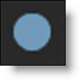
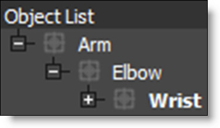

Roto
Rotoscoping or “Roto” for short has become a generic term for drawing shapes to extract, isolate or affect a portion of an image. It is tedious work, but it’s one of the most important parts of the visual effects process. Within the Roto node, there are all the tools needed to make quick work of any Roto job.
For artists specifically interested in Paint, the Roto node is where you create shapes and trackers which can also be used in the Paint node for match moving brush strokes as well as holdout mattes for painting.
Roto Tips
Creating usable shape animations can be a bit tricky with the most common problem being edge chatter. Here’s a few tips to help you on your way.
Analyze the Clip
View your clip to determine the frame that requires the greatest number of points to create the shape. It is easier to draw your shape on the most complex frame as opposed to starting on a simpler frame and adding points later.
Select a Spline Type
In Silhouette, you can create B-Splines (also known as natural splines), X-Splines, Bézier splines, Circles and Squares.
Create Shapes with Less Points
Use as many points as needed to create the shape, but avoid using more than is necessary. The fewer the points, the easier it is to successfully animate the shape. Unnecessary shape complexity inevitably leads to inconsistency when editing points.
Create Multiple Shapes
Create multiple shapes to Roto complex objects. Drawing separate shapes for the major parts of an object give you finer control over motion especially when separate objects intersect with each other.
Edit the Shape in Groups
Try not to individually move points in a shape unless absolutely necessary. Moving points in groups will maintain consistency and eliminate edge chatter.
Use the Tracker
Use the tracker to analyze the motion of your clip and then apply that motion to your shapes. This will cut down on the number of keyframes needed.
Keyframe, Keyframe, Keyframe
By editing your shape at various frames in the clip, Silhouette animates the shape in between those keyframes. This saves you work. Make as few keyframes as possible, but as many as needed so the shape properly follows the object that you are rotoing. For instance, on a 80 frame clip, start by adding keyframes at 1, 20 and 40. If more animation is needed, add keyframes at 10 and 30. Get the idea? Creating too many keyframes will cause the shape to jitter or chatter.
Quick Start
For the inpatient among you, here’s a Roto quick start. For all others, Roto features are covered in more detail after this exercise.
1 In the standalone, load some source footage and create a session using the Roto template.
or
2 In the plug-in, select Type > Roto when creating the project.
3 Make sure you are viewing and editing the Roto node by single-clicking on it in the Trees window or selecting it in the Node Selector at the top left of the Viewer.
A number of different Roto tools are selectable from the Toolbar to the left of the Viewer.
4 View your clip to determine the frame that requires the greatest number of points to create the shape. It is easier to draw your shape on the most complex frame as opposed to starting on a simpler frame and adding points later.
5 Select B-Spline (B) from the Toolbar.
6 Click on the screen to create a control point.
A control point is created.
7 Add as many points as you like.
8 When finished adding points, click the first control point that you added to close the shape.
Use as many points as needed to create the shape, but avoid using more than is necessary. The fewer the points, the easier it is to successfully animate the shape.
Now that you have a shape, you can use either Reshape or Transform to perform editing functions.
9 Select Reshape (R).
Reshape modifies shapes by adjusting their control points and tangents.
10 To move points, select one or more control points and drag the point or points to a new location.
11 To add a new control point, Alt-click on a selected shape.
12 To delete control points, select them and press the Delete key.
13 Go to various frames in your clip and edit the shape using the Reshape tool.
As the shape is edited on different frames, a keyframe marker is shown in the Timebar to provide a visual display of where there are shape keyframes. The color of the markers is determined by the shape color. If multiple selected shapes have a keyframe on the same frame, the most recently selected object's color has precedence. 
Next, instead of modifying the shape’s control points, try modifying the entire shape.
14 Click on Transform (T) in the Toolbar.
Transform affects an entire shape or a group of shapes
15 Select a shape and use one of the on-screen controls to modify it.
Shortcut | Action |
|---|---|
Drag shape | Moves the shape |
Shift-drag shape | Constrain shape movement horizontally or vertically |
Drag bounding box corner or edge handle | Scales a shape |
Shift-drag bounding box corner or edge handle | Proportionally scale a shape |
Ctrl/Cmd-drag on a bounding box corner handle | Rotate a shape |
Alt-drag on a bounding box corner handle | Corner-pin a shape |
Alt-Shift-drag on a bounding box corner handle | Constrains the corner-pin movement to one axis |
Ctrl/Cmd-drag on a bounding box edge handle | Shear a shape |
The Q, W and E keys allow you to quickly translate, rotate or scale selected shapes while using the Transform tool.
16 Press the Q key to activate translation mode, the W key for rotation mode or the E Key for Scale mode and click and drag to transform the selected shape. You must press the Q, W or E key, whichever one was selected, a second time to deactivate the mode.
Bézier
Bézier splines are defined by control points and tangents. The position of the two tangent handles control the amount of a point's curvature.
1 Select Bézier (Shift-B) from the Toolbar.
2 Click on the image to place the first control point.
The starting control point is created and sets the direction of the shape’s path.
3 To extend the control point’s tangents, drag the cursor while keeping the mouse pressed.
Although you can use the Reshape tool to later change a shape’s look after drawing it, you can also use the same Reshape keyboard shortcuts to modify a shape while drawing it. See Adjusting Bézier Curves for more information on the various ways to change a control point’s tangents.
4 Click on the screen to add more control points.
5 When finished adding points, click the first control point that you added to close the shape.
Use as many points as needed to create the shape, but avoid using more than is necessary. The fewer the points, the easier it is to successfully animate the shape.
B-Spline
In contrast to Béziers, B-Splines don’t use tangents and are created by only using control points. The position of the points, their intensity settings as well as their proximity to each other determine the curvature of the shape.
1 Select B-Spline (B) from the Toolbar.
2 Click on the screen to create a control point.
A control point is created.
3 Add as many points as you like.
4 When finished adding points, click the first control point that you added to close the shape.
Use as many points as needed to create the shape, but avoid using more than is necessary. The fewer the points, the easier it is to successfully animate the shape.
X-Spline
A X-Spline is an intuitive and easily editable spline format whereby its points can be of three different types: Cardinal, Corner or B-Spline.
1 Select X-Spline (S) from the Toolbar.
2 Click on the screen to create a control point.
A control point is created.
3 Add as many points as you like.
4 When finished adding points, click the first control point that you added to close the shape.
Use as many points as needed to create the shape, but avoid using more than is necessary. The fewer the points, the easier it is to successfully animate the shape.
Edge Snapping
You can snap the control points of an X-spline to edges of an object by using the Edge Snapping tool.
1 Select some points on an X-Spline.
2 Press the Alt-S key to snap.
The points snap to the nearest detectable edge. Alternatively, start dragging the points, hold the Alt-S key down and they will snap to the nearest detectable edge. In some cases, the points may not snap to where you want them to. If this happens, adjust the points manually.
Magnetic Freehand
Creating A Magnetic Shape
Using the Magnetic Freehand tool, you can create a freehand shape with magnetic properties. There are two methods of creating a magnetic shape: Tracing or Strokes.
Tracing
Trace the cursor along the edge you want to follow and the shape boundary snaps to the nearest edge.
1 Select Magnetic Freehand (Shift-F) from the toolbar.
2 Click once near the edge you want to start with.
3 Move your cursor along the edge you want to follow.
4 Click once any time you want to anchor the currently drawn path along the route and a point is added.
5 If there is a tricky section of the edge that the Magnetic Freehand tool doesn’t want to line up with, click-hold and drag to draw a freehand shape.
If you want to draw off the edge of the frame, click-hold and drag while tracing to switch to freehand mode.
6 To complete the drawn line, click the first control point that you added.
Strokes
Draw temporary foreground (inside the shape) and background (outside the shape) strokes for the object you want to create a shape around.
1 Define foreground areas by Shift-click-dragging.
2 Define background areas by Alt-click-dragging.
As soon as the first background stroke is drawn, an X- Spline is created around the object.
3 Add additional foreground and background strokes as needed so that the shape properly surrounds the object.
4 Press Esc to clear the foreground and background strokes as well as deselect the current shape. You can now create a new magnetic shape or new foreground/background strokes.
Creating A Freehand Shape
1 Select Magnetic Freehand (Shift-F) from the toolbar.
2 Click-hold and drag to create a freehand shape.
3 To complete the drawn line, release the mouse on the first control point that you added.
Adjusting Detail
Magnetic and freehand shapes have a fairly high point count to match the subtle changes in the line.The amount of points can be reduced or increased.
1 Select Magnetic Freehand (Shift-F) from the Toolbar.
2 Select an X- Spline in the Object List.
3 Adjust the Detail slider directly above the Viewer to reduce or increase the number of points.
Adjusting the Detail reduces points for X-Splines created with the Magnetic Freehand tool, while increasing points for normal X-Splines.
Square
1 Select Square (Shift-S) from the Toolbar.
2 Do one of the following:
• Click and drag in the shape of a square.
• To create a perfect square, hold down the Shift key while clicking and dragging in the shape of a square.
3 When you release the mouse button, a square shape appears.
Circle
1 Select Circle (Shift-C) from the Toolbar.
2 Do one of the following:
• Click and drag in the shape of a circle.
• To create a perfect circle, hold down the Shift key while clicking and dragging in the shape of a circle.
3 When you release the mouse button, a circular shape appears.
Open Shapes
Open shapes are good for rotoscoping strands of hair or thin objects.
1 Select either Bézier, B-Spline or X-Spline from the Toolbar.
2 Click on the screen to create a control point.
A control point is created.
3 Add as many points as you like.
4 When finished adding points, select the Reshape tool.
You can also press the Esc key to finish the shape.
5 Select the open shape and in the Object window, adjust the Stroke Width to set its thickness and choose a Flat or Round Cap Style.
Transform (T)
Once you draw a shape, there are various ways to modify it. As the object changes over time, you will need to adjust the shape so that it exactly matches the object. The Transform tool affects a shape, a group of shapes or a selection of points.
Shape Transform
Shape Transform allows you to position, move, scale, rotate, shear or corner-pin a shape or selection of shapes using the on-screen controls.
1 Press and hold the Transform icon to show the available modes.
2 Select Shape Transform.
Note: You can press the T key to cycle through the Transform modes.
3 Select a shape.
4 Use one of the on-screen controls to modify the shape. See the tutorials to follow for more detail on using the On-screen controls.
Point Transform
Point Transform allows you to position, move, scale, rotate, shear or corner-pin a selection of points using the on-screen controls.
1 Using Reshape (R), select multiple points on the shape.
2 Select Point Transform by pressing the T key twice.
A bounding box with on-screen controls appears around the selected points instead of around the entire shape.
3 Use one of the on-screen controls to modify the shape. See the tutorials to follow for more detail on using the On-screen controls.
Moving Shapes
Shapes can be moved horizontally or vertically.
Note: The remainder of the Transform tutorials assume that Shape Transform mode is enabled in the Toolbar.
1 Select Shape Transform in the Toolbar.
2 Select a shape or series of shapes.
3 Drag on the outline of one of the shapes.
or
4 Press the Q key to activate translation mode and click and drag to move the shapes.
5 You must press the Q key a second time to deactivate translation mode.
To constrain movement along an axis:
1 Select a shape or series of shapes.
2 Press the Shift key while dragging the outline of a shape. The movement is constrained by the first direction (horizontal or vertical) that you drag in.
Nudging Shapes
Shapes can be nudged horizontally or vertically using the Arrow keys. One press of the Arrow key moves the shapes 1 pixel. Using the Shift key in conjunction with the Arrow keys moves the shapes 10 pixels.
1 Select a shape or series of shapes.
2 Use the Arrow keys to nudge the shapes.
Scaling Shapes
Scaling changes the size of the shapes.
1 Select a shape or series of shapes.
2 Drag any of the points on the shape bounding box.
or
3 Press the E key to activate scaling mode and click and drag to scale.
Note: The position of the cursor when E is pressed sets the anchor point for the scaling.
To proportionately scale, hold down the Shift key when scaling.
4 You must press the E key a second time to deactivate scaling mode.
Rotating Shapes
Rotating changes the angle of the shapes.
1 Select a shape or series of shapes.
2 Ctrl/Cmd-drag on a shape bounding box corner handle.
or
3 Press the W key to activate rotation mode and click and drag to rotate.
Note: The position of the cursor when W is pressed sets the anchor point for the rotation.
4 You must press the W key a second time to deactivate rotation mode.
Corner-Pinning Shapes
The corner points of a shape’s bounding box can be corner-pinned. For instance, you could fit the corners of a shape into the corners of a billboard.
1 Select a shape.
2 Alt-drag the corners of the shape’s bounding box.
Shearing Shapes
Shapes can be sheared resulting in the shape being skewed horizontally or vertically.
1 Select a shape.
2 Ctrl/Cmd-drag on the midpoints of a shape bounding box on either the horizontal or vertical axis.
Anchor Point
A shape rotates around its center point, but scales from the opposite handle. Moving the anchor point changes the center of rotation and scaling when using the on-screen controls.
1 Press the . (period key).
The Anchor Point is displayed on the screen.
2 Click and drag the Anchor Point to the desired location.
3 Select your shape and then rotate or scale it.
Notice how the shape rotates and scales around the Anchor Point.
Note: If more than one shape is selected, they will both rotate and scale around the Anchor Point.
Copying and Pasting Shapes
Shapes can be cut(Ctrl/Cmd-X), copied(Ctrl/Cmd-C) and pasted(Ctrl/Cmd-V).
Deleting Shapes
A shape or selection of shapes can be easily deleted using none other than the Delete key.
1 Select a shape or set of shapes.
2 Hit the Delete key.
Reshape (R)
The Reshape tool modifies shapes by adjusting their control points and tangents.
Selecting Control Points - Reshape and Magnetic Reshape
1 Press and hold the Reshape icon to show the available modes.
2 Select Reshape from the Toolbar.
Note: You can press the R key to cycle through the Reshape modes.
3 Select a shape.
4 Click on a single point to select it, Shift-click to add to the selection or Ctrl/Cmd-click to toggle the point selection.
Rectangular Selection
Control points can be selected by drawing a rectangular selection. This is the default behavior.
1 Click and drag a rectangle over multiple control points.
A rectangular selection is created.
Note: A Shape > Freehand Point Selection preference controls whether freehand selection is used by default. Pressing Ctrl/Cmd and dragging uses the non-default method of selection. See the Shape Preferences for more information.
Freehand Selection
Control points can be selected by drawing a freehand polygon.
1 Ctrl/Cmd-drag in the Viewer to begin the selection. Once the selection is started, release Ctrl/Cmd and complete the selection.
A freehand selection is created.
Adding Control Points
Adding control points assists in tracing more detailed objects.
1 Select a shape.
2 Alt-click on a selected shape to add a new control point.
Don’t click on an existing control point because it will move it instead.
Deleting Control Points
1 Select the control points and press the Delete key.
or
2 Right-click on a control point and select Delete from the Reshape pop-up menu.
Moving Control Points
1 Select one or more control points.
2 Drag the point or points to a new location.
Nudging Points
Points can be nudged using the Arrow keys. One press of the Arrow key moves the points 1 pixel. Using the Shift key in conjunction with the Arrow keys moves the points 10 pixels.
1 Select a point or series of points.
2 Use the Arrow keys to nudge the points.
Magnetic Reshape
1 In the Toolbar, click on the Reshape icon to cycle from Reshape to Magnetic Reshape mode.
2 Select a shape and then a series of points.
3 Drag one of the selected points.
Points near the cursor move more than points farther away.
While in Magnet mode with multiple selected control points, you can Shift-Alt click/drag in the Viewer, not on any control points or shapes, and that becomes the magnet pull position instead of using a point.
Brush Reshape
Brush Reshape uses a circular brush to automatically select and then move points when you click and drag them using the Magnetic Reshape behavior.
1 In the Toolbar, click on the Reshape icon to cycle from Magnetic Reshape to Brush Reshape mode.
2 Click on a shape to select it.
3 Move the brush outline over points and they are automatically selected.
4 Change the brush size using either Ctrl/Cmd-drag left/right or the bracket keys [ ].
5 Drag one of the selected points.
As with Magnetic Reshape, points near the cursor move more than points farther away.
6 Press Shift while dragging to disable the magnetic behavior.
7 You can also Shift-Alt click/drag in the Viewer, not on any control points or shapes, and that becomes the magnet pull position instead of using a point.
Numbering Points
All points or a selection of points can be numbered.
Numbering All Points
1 Go to File > Preferences > Shape on Windows and Linux or Silhouette > Preferences > Shape on Mac.
2 Set the Number Points preference to All.
3 Click OK.
Numbers are now displayed next to all points.
Number One Point or a Selection of Points
1 Using the Reshape (R) tool, select one or more points.
2 Right-click on one of the selected control points and select Tag.
The points are now tagged for numbering.
3 Go to File > Preferences > Shape on Windows and Linux or Silhouette > Preferences > Shape on Mac.
4 Set the Number Points preference to Tagged.
5 Click OK.
Numbers are now only displayed next to tagged points.
Grouping Points
1 Using the Reshape (R) tool, select some points.
2 To assign the points to a group:
• Press Shift-Alt-[1-8].
or
• Right-click, select Groups from the pop-up menu and choose a group number.
If points are already in a group, a check mark appears next to the number. Also, the group number is underlined if a group already exists.
Note: The points are now grouped and colored according to the colors defined in the Colors > Point Groups preference.
3 Select point groups by pressing Alt-[1-8] or Ctrl-Shift clicking on the spline within a grouped area.
You can edit point groups within the Normal/Magnetic Reshape modes as well as Point Transform mode.
4 Remove points from a group by selecting the points, right-clicking and choosing Groups > None.
5 Remove all grouping for a selected shape by right-clicking and choosing Groups > Reset All.
Feather
Shape points can be feathered to create variable edged blurs on a point by point basis.
Closed Shapes
1 Select Reshape (R) from the Toolbar.
2 Select a shape point and a red, outward feather handle appears. Dragging this handle outward will pull the feather out.
After the initial drag, the outer feather point can be dragged around independently.
Multiple selected points can be dragged simultaneously and by a proportionate amount. To move the shape and feather points simultaneously, press Shift while moving the shape point.
Note: The display of the feather handles can be hidden using Alt-F.
Open Shapes
1 Select Reshape (R) from the Toolbar.
2 Select an open shape, adjust the Stroke Width to set its thickness and choose either a flat or round Cap Style in the Object window.
Once you've done this, additional per-point feather handles appear--a red one for the Stroke Width and a green one for the Feather.
Just drag on the handles to make adjustments.
3 Multiple selected points can be dragged simultaneously and by a proportionate amount.
Adjusting Bézier Curves
The length and direction of a control point’s tangents direct the curve through that control point.
Control points have two tangents that can extend from it. The path of the curve through the control point is determined by the length and orientation of the tangents. When you drag one tangent’s handle, the adjacent tangent moves as well.
1 Select a control point on a Bézier shape.
2 Click and drag a tangent handle.
This adjusts the length of one tangent while retaining a fixed angle between the two tangents.
3 Ctrl/Cmd-drag a tangent.
This adjusts both tangents simultaneously while retaining a fixed angle between the two tangents.
4 Alt-drag a tangent.
Only one tangent is moved which is useful for creating corners.
5 Right-click over a control point and select Linear, Corner or Cardinal.
Linear adjusts both tangents one quarter the distance and in the direction of their adjoining control points. Corner collapses both tangents to create a corner point. Cardinal creates a smooth point where the curve passes smoothly through it.
Extending Short Tangents
Sometimes a control point’s tangents are so close together that trying to modify the tangent results in movement of the control point. If this is the case, you can force the tangents to move without affecting the control point.
1 Press the Alt key while dragging the tangent.
Only the tangent will move, leaving the control point unaffected.
Moving Curve Segments
Normally, you move control points to adjust the form of a shape, but you can also move the portion of the curve between control points.
1 Deselect all control points by clicking somewhere off the shape.
2 Ctrl/Cmd-drag a Bézier curve segment between control points.
Once you start dragging, the Ctrl/Cmd key can be released.
Note: The surrounding tangents remain smooth, but if you want to keep adjacent tangents from moving, hold down the Alt key while dragging.
Adjusting B-Splines
B-Splines are created by only using control points and are simple to adjust. The position of the points, their weight settings as well as their proximity to each other determine the curvature of the shape. The weight (amount of pull on a point) decides how sharp or smooth it is. Silhouette employs variable weight intensities on a point by point basis.
1 Select a control point on a B-Spline shape.
2 Alt-drag the point to the right to create a corner point or Alt-drag to the left to create a smooth point.
or
3 Alt-click to cycle through the preset weight settings of the point.
or
4 Right-click over a control point and select Corner or B-Spline.
Note: The Alt-click and pop-up menu preset weight settings for Corner and B-Spline can’t be animated.
Adjusting X-Splines
X-Splines are created by using control points and then adjusting their weight to coincide with one of the point types: Cardinal, Polygon or B-Spline. The point type can even be somewhere in between one point type and another.
1 Select a control point on a X-Spline shape.
2 Alt-drag the point to the right. The tension of the point goes from Cardinal to Corner to B-Spline.
or
3 Alt-click to cycle through the different point types.
or
4 Right-click over a control point and select Corner, Cardinal or B-Spline.
Converting B-Splines or X-Splines to Bézier Splines
You may convert your B-Splines or X-Splines to Bézier Splines at any time.
1 Select a B-Spline or X-Spline shape.
2 Select Actions > Edit > Convert to Bézier.
Once you select Convert to Bézier, a couple of things happen. The visibility of the B-Spline or X-Spline is toggled to off. A new Bézier Spline is created and is named the same as the B-Spline or X-Spline but has an * at the end of the name.
Note: The Bézier conversion of B-Splines that use extreme, variable weight adjustments will not exactly match the original B-Spline. Do not use extreme, variable weight adjustments if you are planning on converting the B-Spline to a Bézier.
Copying and Pasting Shapes
Selected shapes can be cut(Ctrl/Cmd-X), copied(Ctrl/Cmd-C) and pasted(Ctrl/Cmd-V).
Breaking Shapes
In the Reshape tool, closed shapes can be opened using the Break option from the control point pop-up menu.
1 Select and right-click on a control point.
2 Choose Break from the pop-up menu.
The shape opens at the selected control point.
Closing and Extending Shapes
Shapes can be closed or extended with just a few mouse clicks. It is necessary to use the Reshape tool to perform the following actions.
Closing Shapes
1 Select one of the control points at the end of the shape.
2 Alt-click on the other end point to close the shape.
Extending Shapes
1 Select a control point at either end of an open shape.
2 Alt-click somewhere off the shape.
Joining Open Shapes
In the Reshape tool, open shapes can be joined together.
1 Select one of the end points of the source shape by clicking on it.
2 Make sure both shapes are selected in the Object window.
3 Alt-click on one of the end points of the target shape.
The two shapes are now joined together as one.
4 Repeat steps 1 and 3 for the two remaining end points to close the shape.
Note: The target shape inherits the attributes of the source shape.
Combine Shapes
Copies the selected control points from a source shape into a target shape, placing them between two adjacent selected points in the target shape.
1 Select one or more points on a source shape.
2 Ctrl/Cmd-click the target shape in the Object List.
3 Select two adjacent points on a target shape.
4 Choose Combine Shapes from the right-click pop-up menu.
The selected points from the source shape are copied between the two selected points in the target shape.
Extract Shape
Extracts the selected points of a shape into a new closed shape.
1 Select three or more shape control points.
2 Choose Extract Shape from the right-click pop-up menu.
The selected controls points are used to create a new closed shape while removing the points from the original shape.
Split Shapes
Similar to Split Edit in non-linear editing systems where a clip is split in two, Split Shapes is useful for shapes that transform from simple to complex and vice-versa.
1 Drag the Timebar to the frame where you would like to split a shape.
2 Select the shape and choose Split Shapes from the right-click pop-up menu.
Note: With points selected, Split Shapes creates the new shape using the selected points.
The original shape is duplicated and named Shape-copy. At the current frame, the original shape is set to 0% opacity and the copied shape set to 100%. Both shapes are placed in a layer named Shape-Compound Shape. In editing terms, you are cutting from one shape to another.
Note: When using Split Shapes, it is useful to fade the shape outline based on the opacity. The V key toggles the Fade Outline with Opacity behavior on/off and when enabled, the spline visibility tracks with the opacity--splines disappear at 0 opacity and fade in from 1-100%. At the Split Shapes edit point, the "from" shape will disappear and the "to" shape will appear.
Collapse Points
Collapses a selection of points into a very small area which can later be distributed between surrounding points. This is useful for shapes whose complexity changes over time.
1 Select multiple control points.
2 Choose Collapse Points from the right-click pop-up menu.
The points collapse into a very small area.
3 Drag-select a box around the collapsed points to select them.
4 Choose Distribute Points from the right-click pop-up menu to expand and distribute the collapsed points.
Distribute Points
Evenly distributes selected points.
1 Select multiple control points.
2 Choose Distribute Points from the right-click pop-up menu.
The points are evenly distributed between surrounding points.
IK (Inverse Kinematics)
In computer graphics, inverse kinematics (IK) is a technique that provides automatic movement of objects. It allows elements of an object to be linked, such as the parts of an arm or leg, and causes them to move in a prescribed, realistic manner. IK simplifies the process of rotoscoping jointed, segmented figures by making the motion of each part related to the motion of the linked parts. That way, you simply have to animate the starting and ending joints, and the ones in between will adjust themselves and create more natural looking movement.
1 To create an IK chain for an arm, create three layers.
2 Name the layers as follows: Arm, Elbow, Wrist.
3 Move the Elbow layer into the Arm layer.
4 Move the Wrist layer into the Elbow layer.
Your layers should look like this:
Create shapes for each layer.
5 Select the Arm layer and create a shape for the upper arm.
6 Select the Elbow layer and create a shape for the forearm.
7 Select the Wrist layer and create a shape for the hand.
The layers and shapes should look like this:
Now that the layers and shape have been setup, the joints need to be placed by positioning the Anchor Point of each layer using the Transform tool.
8 Select the Arm layer in the Object List and activate the Transform (T) tool.
9 Move the center Anchor Point on-screen control so that it is positioned at the top of the shoulder.
10 Select the Elbow layer and position the Anchor point at the elbow.
11 Select the Wrist layer and position the Anchor point at the wrist.
Your image will be different, but the joints should look something like this:
12 Select IK (Y) in the Toolbar.
13 Select the Upper Arm, Forearm and Wrist shapes and an IK chain is built on the fly that flows up the shape's layer tree to the top-most layer.
Each layer’s Anchor Point becomes a joint in the IK chain. The “bones” are just the connections between the layer anchors.
14 Click-drag a bone or shape to rotate the shape around the parent’s anchor point.
When animated, keyframes are automatically set for each layer’s rotation parameter. However, you can explicitly set the layer rotation keyframes by right-clicking on a selected bone and a choosing Add Key.
15 Click-drag a joint to use IK to rotate all joints up the chain.
16 Alt-click-drag a joint to move the joint while attempting to keep other joints in place.
IK greatly simplifies the rotoscoping of humans, animals and all manner of jointed creatures.
Note: To quickly jump between the Reshape, Transform, and IK tools while editing a shape, use the shortcut keys: R for Reshape, T for Transform and Y for IK. R, T and Y are very convenient since they are right next to each other.
MultiFrame
MultiFrame modifies the Transform and Reshape tools to allow you to make adjustments across all previously set keyframes or a selection of keyframes.
1 Select MultiFrame (M) in the Toolbar and a red outline is drawn around the Viewer to let you know that MultiFrame is active.
The MultiFrame parameters can be set in either the Timebar or Timeline.
2 Set the Start and End using the numeric fields that appear in the Timebar when MultiFrame is selected.
or
3 Set the Start and End by clicking and dragging the ends of the red MultiFrame track in the Timeline.
4 Select either the Transform or Reshape tools, make a selection and modify the shape.
Only keyframes defined in the MultiFrame range are adjusted.
Note: Point trackers can also be modified in MultiFrame mode.
Weighted MultiFrame
The MultiFrame keyframe adjustment can also be weighted based on a specified Fade In or Fade Out time period. For instance, if an object is slowly drifting, the strength of the adjustment can be faded in or out.
1 Set the Fade In and Fade Out values using the numeric fields that appear in the Timebar when MultiFrame is selected.
or
2 Set the Fade In and Fade Out values by pressing Ctrl/Cmd and dragging the start and end of the red MultiFrame range.
3 Choose either the Transform or Reshape tools and select a shape or points.
It can be useful to enable the RotoOverlay > Motion Path to visualize how the weighted MultiFrame is adjusting the shape. Go to the RotoOverlay tutorial to see how it works.
4 Modify the selected shape or points.
Keyframes within the fade areas are adjusted less than those that are not.
5 Right-click in the Timeline and select MultiFrame > Reset To Work Range to reset all MultiFrame parameters.
RotoOverlay
The RotoOverlay tool provides three options to visualize the selected shape’s animation and motion blur: Motion Path, Motion Blur and Onion Skin.
1 Select RotoOverlay (O) in the Toolbar.
Once selected, a Roto Overlay window opens allowing you to select or deselect various options.
2 View each option separately.
• Motion Path
Displays the shape’s motion path with visual indicators for frames and keyframes.
3 Hold Alt over a motion path marker and the frame number is displayed in the status bar. Click on the marker and the Timebar will jump to that frame.
• Motion Blur
Displays a dashed line to show the width of the motion blur.
Note: When the Viewer is set to Foreground, this option allows you to visualize the motion blur without rendering it. This provides a significant speed increase when using many shapes with motion blur.
• Onion Skin
Shows the shape outline on previous and future frames.
4 Hold Alt over an onion skin shape and the frame number is displayed in the status bar. Click on the shape and the Timebar will jump to that frame.
5 Change the Onion Skin Frame Range in the Roto Overlay window. This determines the amount of frames used in the onion skin.
Note: The first numeric field displays the frames before the current frame while the second numeric field displays frames after the current frame. By default, the two fields are ganged together. Click the lock icon to decouple them.
As an alternative to using the pre-defined colors for the Motion Path, Motion Blur and Onion Skin, you can use the default shape colors.
6 Enable Use Shape Color.
The color of the shape is now used for the selected overlay function.
Opacity
Shapes can conveniently animate on and off using the Opacity icon in the Object List.
1 Go to a frame where you would like the shape to turn off.
2 Click the Opacity icon.
Clicking on the Opacity icon toggles the shape to 0% opacity.
The Opacity icon indicates the opacity level of a shape. It is white when opacity is 100%, black when 0% and a shade of gray when somewhere in between.
3 Go to a different frame and click the Opacity icon again. The shape is now back to 100% opacity.
When using the Opacity icon, keyframing is enabled and the animation type is set to Hold. This allows you to conveniently turn the shape on and off with one keyframe.
In the Timeline, shapes set to 100% opacity appear as a bar. This is achieved by darkening all tracks associated with an object in areas where the opacity is 0.
Note: In File > Preferences on Windows and Linux or Silhouette > Preferences on Mac, there is a Shape > Fade Outline With Opacity parameter that draws unselected/inactive shape outlines using the opacity value. The V key toggles the Fade Outline with Opacity behavior on/off and when enabled, the spline visibility tracks with the opacity-splines disappear at 0 opacity and fade in from 1-100%.
Using Cryptomatte
Cryptomatte creates ID mattes from the Roto node using organizational information available at render time. Cryptomatte generated images are very colorful, assigning each layer or shape a different random color. The Roto layers/shapes in the rendered Cryptomatte EXR file can then be selectively turned on or off in other products that support Cryptomatte like Nuke and After Effects.
1 Create some layers and shapes.
Shapes and layers are automatically assigned an ID and rank with layers and shapes being two entirely different sets of Cryptomatic data. Each layer gets its own ID based on its layer name while shapes get their own ID based on their shape name and layer hierarchy.
2 Connect the Roto > Data output to the Data input of the Key > Cryptomatte node.
3 Set Type to Layers or Shapes to display either layer or shape Cryptomatte data in the Cryptomatte node.
The Cryptomatte node displays each layer or shape with a different color.
4 Connect the Roto > Data output to the Data input of the Output Multi-Part node.
5 In the Output Multi-Part node Cryptomatte parameter group, set the Type to Layers, Shapes or Layers+Shapes.
This determines whether layer, shape or layer+shape Cryptomatte data is written in the EXR file. When you render, the Cryptomatte layer and shape data are written into their own EXR channel.
6 Launch a Cryptomatte supported program like Nuke and load the rendered Cryptomatte EXR file.
The Roto layers/shapes in the rendered Cryptomatte EXR file can now be selectively turned on or off. By default, the layers are named CryptoAsset00, CryptoAsset01, CryptoAsset02, etc. while shapes are named CryptoObject00, CryptoObject01, CryptoObject02, etc.
Rendering Shapes to Channels
Shapes can be assigned to different channels of an image when rendering.
1 Create four shapes.
2 Select a shape and in the Object window, set the Channel parameter to Red.
3 Assign the other three shapes as Green, Blue and Alpha.
Now that you have assigned the shapes to different channels, you can visualize the results prior to rendering using View > Channels in conjunction with the Alt-R, G, B and A shortcut keys.
4 Choose View > Channels.
5 Use the Alt-R, G, B and A shortcut keys to see which shapes are assigned to the various channels.
6 When ready, render shapes into the assigned channels by connecting the Roto node’s Channels output to an Output node.
7 In the Output node, choose a file format that supports RGBA and make sure that RGB and Alpha are enabled in the Channels field.
Rendering Shape Outlines or Color Filled Shapes
Shapes can be outlined or filled with a color and rendered in the RGB output.
1 Create some shapes.
2 In the Node parameters, activate Color > Enable.
3 Turn up the Outline Size parameter.
The shape outlines will now render in the RGB output. To change the shape’s outline color, use the Shape > Color parameter.
4 Set the Outline Size parameter to 0 and turn up the Fill Opacity.
The shapes are now filled with a color in the RGB output.
5 Select an individual shape and change the color in the Object window.
Each shape can have its own color.
6 If you’d like, you can globally change the opacity using the Color > Fill Opacity node parameter. You can also change the opacity of each shape separately using the Shape > Opacity control in the Object window.
Importing and Exporting Shapes
Export
Silhouette, After Effects, Fusion, gMask (Flint, Flame, Inferno), Nuke and Shake 4.x SSF shapes can all be exported.
Silhouette
1 Select the shapes that you want to export.
If you are exporting using the Silhouette Shapes format, you can also export layers.
Note: Open shapes can only be exported using the Silhouette and Nuke 9+ Shapes formats.
2 Choose File > Export and select the shape format that you would like to export to.
To export to After Effects masks, use the Silhouette Shapes option. The Silhouette Shape Import/Export Plug-in is then required to import Silhouette Shapes into After Effects.
3 When the file browser opens, type a name and click OK to save the file.
A file is saved with the appropriate file extension.
Note: When exporting to Nuke, you can optionally fully bake shape and transform data, convert opacity to Nuke Lifetime, and export the Silhouette project name as determined by the Nuke 9+ Shapes preferences.
Mocha Pro
Mocha Pro can export to the Silhouette Shapes format.
1 Select the shapes that you want to export.
2 Choose File > Export Shape Data and select Silhouette Shapes (*.fxs).
3 Click Copy to Clipboard or Save.
• Copy to Clipboard: The shapes and layers are copied to the system clipboard and can then be pasted into a Silhouette Roto node.
• Save: A file browser opens, type a name and click OK to save the file.
A file is saved with the appropriate file extension.
After Effects
The Silhouette Shape Import/Export Plug-in for After Effects is required to export After Effects masks to Silhouette Shapes. When exporting After Effects masks, the following shape parameters transfer into Silhouette: opacity, blur, shape color, shape name, invert and locked states, transfer mode and per-shape motion blur state.
1 Start Adobe After Effects, open a project and select a layer in the Timeline that contains After Effects masks.
2 From the After Effects File menu, choose Export > Silhouette Shapes.
A file browser opens.
3 Type a name and press OK to save the file.
All After Effects masks from the selected layer are exported and a file is saved with a .fxs file extension.
Import
Silhouette
Silhouette, Mocha Pro, After Effects, and Shake 4.x SSF shapes can all be imported into Silhouette.
1 Choose File > Import and select the shape format that you would like to import.
A file browser opens.
2 Select the shape file to import and click OK.
The shapes are added to the current session.
Mocha Pro
Mocha Pro shapes and layers are imported into Silhouette using the Silhouette Shapes format. If Copy to Clipboard was used in Mocha Pro instead of saving to a file, the shapes and layers are copied to the system clipboard and can then be pasted into a Silhouette Roto node.
Mocha shapes and layers can also be brought into Silhouette using the Mocha Pro node’s Action menu. This menu creates a Silhouette Roto node from the Mocha Pro project without having to go into the Mocha UI.
Shake
Shake 4.x shapes are imported into Silhouette, but attributes such as feathering, color and opacity are ignored.
After Effects
The Silhouette Shape Import/Export Plug-in for After Effects is required to import Silhouette Shapes and convert them to After Effects masks. When importing Silhouette Shapes, the following shape parameters transfer into After Effects: opacity, blur, shape color, shape name, invert and locked states, transfer mode and per-shape motion blur state.
1 Start Adobe After Effects, open a project and select a layer in the Timeline.
2 From the After Effects File menu, select Import > Silhouette Shapes.
A file browser opens.
3 Select the shape file to import and click OK.
Flint / Flame / Inferno
Importing Shapes into Flint / Flame / Inferno
1 Open the Garbage Mask Setup menu.
2 Click Load Setup.
3 When the File Browser opens, select the gMask file that you saved from Silhouette.
Fusion
Importing Shapes into Fusion
1 From a file browser window, drag the .setting file that you saved from Silhouette and drop it into a Fusion flow.
Nuke
Importing Shapes into Nuke
When using the Nuke 9+ Shapes export option, Nuke will import open/closed shapes, the shape feather, opacity, blend mode, invert, motion blur, outline color, fill color, shape blur (inner and outer blur only), and visibility. The layer’s blur, visibility and motion blur are also imported in addition to the node blur. You can optionally fully bake shape and transform data, convert opacity to Nuke Lifetime, and export the Silhouette project name as determined by the Nuke 9+ Shapes preferences.
1 Select File > Open and choose the .nk file that you saved from Silhouette.
Note: The imported shapes are set to render into the alpha channel only.
To ensure that the Alpha channel displays the same in Nuke as it did in Silhouette, there is a specific Nuke > Viewer control that needs to be enabled.
2 Select the Nuke Viewer node, right-click in the Viewer and choose Viewer settings to open them.
3 Enable “apply LUT to color channels only”.
Note: You can make this a default Viewer setting in the Nuke preferences.
The Alpha channel in Nuke will now match Silhouette.
Shake
Importing Shapes into Shake 4.x
Shake will import the shape name, locked/unlocked state, opacity, visibility, motion blur on/off, shutter angle, and shutter phase. In addition, subtractive shapes import into Shake as black in the RGB channels with a white alpha channel.
1 Create a RotoShape node.
2 Click on the Import Shape Data from File icon.
3 When the File Browser opens, select the .ssf file that you saved from Silhouette.
4 Drag the slider in the Timebar to see your shape.
Motion Blur
Motion blur is the directional blurring of rapidly moving shapes. To use Motion Blur, it must be activated for each individual shape as well as in the Roto node.
1 Select one or more shapes and enable Motion Blur in the Object window.
2 In the Node parameters, enable Motion Blur and adjust the Shutter Angle, Shutter Phase and Samples as desired.
When working with motion blur, it is best to keep your View set to Foreground. This way editing your shape will be quick and interactive.
3 Set your View to Foreground.
When you need to view the motion blurred alpha channel, use Shift-A. Shift-A toggles the View to Output, superimposes the alpha channel over the image and deactivates the Overlay. Pressing Shift-A again returns the Viewer to its previous state.
4 To view the motion blurred alpha channel, press Shift-A.
Note: Normally, motion blur is calculated going forward, so if there is no shape motion beyond the end of a clip, there won’t be motion blur on the last frame. To work around this, add an extra frame or two to the end of the work range in the Timebar, make sure Show Work Range is disabled in the Timeline context menu, and then move the shape’s last keyframe to be outside of the Session range.
Renaming Objects
You can rename a shape, layer or tracker by:
1 Click on the object once to select it, hit the Enter key, type in the new name and press Enter again.
or
2 Double-click the object, type in a new name and hit the Enter key.
or
3 Right-click on the object, select Rename and type in a new name.
Adding Notes
You can type a note for selected objects. Currently, shapes, trackers, depth objects, and layers are supported
1 Select a shape, tracker or layer in the Roto node.
2 In the Object List, click the Notes icon to the right of the selected object.
The Notes window comes forward.
3 Click in the Notes tab text editor and type your note.
The center of the Notes icon fills in once a note is entered.
4 Hover over the Notes icon in the Object List and the note is displayed as a tool tip.
Notes can also be displayed with callout lines in the Viewer.
5 Click the Notes icon in the Viewer.
The notes appear in the Viewer with the object name listed along with the note.
6 Click on a note’s text to select the object and a callout line is drawn from the note to the object.